Stepanka is a teascher!!! Oh my!
체코에서온 예쁜 금발의 스테팡카 선생님과 신나는 어린이집 아이들 8명이
7월 8일 3시 스톤앤워터 교육장에서 만났다.
인생에 처음 교사체험을 한국서 하게 된 스테팡카 (대학에서 조소를 할 계획이다)
통역 봉사 관광학과 학생 조재영자매 (문화단체 체험이 하고싶은 ) +
늘 수고 해주시는 인솔교사 두분+
교육예술 박 팀장
스톤앤워터 교육장이 그득했다.
7월의 주제는 " 100 개의 손"
-손의 기능에 대해 나누기
-손의 구조에 대해 나누기
-아이디어 스케치 해보기 (글이든 , 그림이든.. )
-찰흙 작업
-평가
-전시
Stepanka and 8 children from the YE-EUN Children
Center in Ansan met at STONENWATER" on July
08.2009.
Coming from the Czech Republic, the lovely fair-
haired girl, Stepanka is a volunteer of IWO
She will specialize in Sculpture at the university.
She became a teacher for the first time in her life in
korea.
The space of stonenewater was vivid with life.
teaching program development: shin-hye park
teaching: Stepaka (IWO volunteer)
Interpreter: Jo, Jaeyoung (volunteer)
Theme: "a hundred hands"
Think, Think, about function of hands.
(negative & positive).
about anatomic features of hands.
Idea sketch for a work (short essay + drawing)
molding a figure out of clay.
having an exhibition
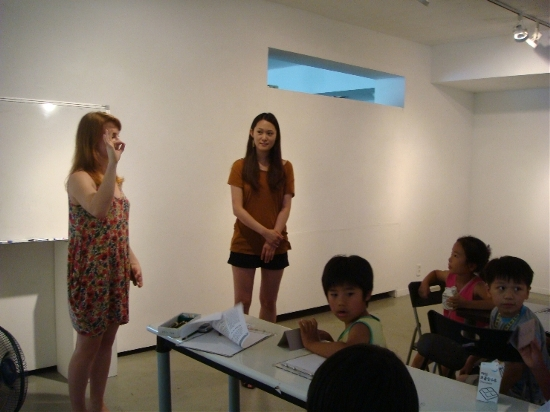 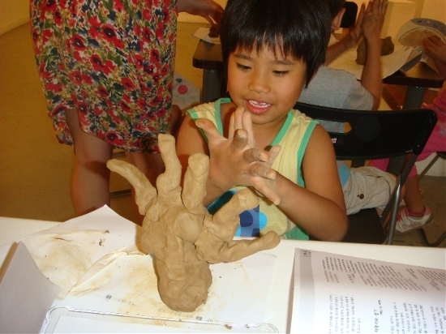 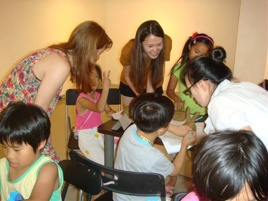 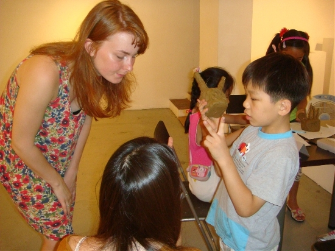 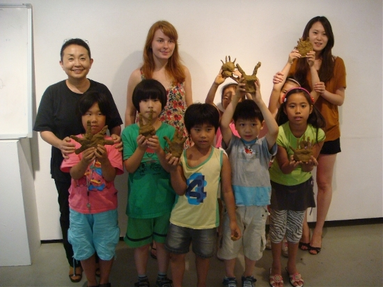 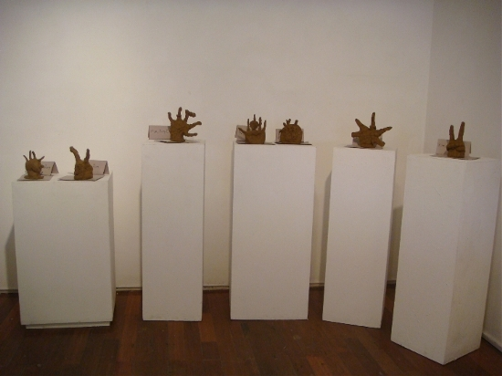 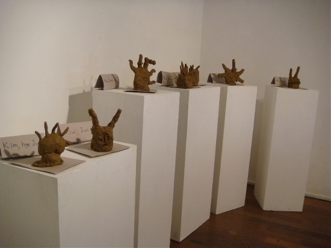 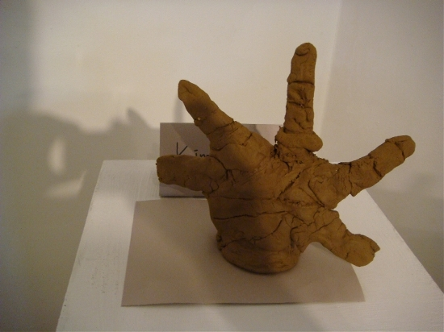 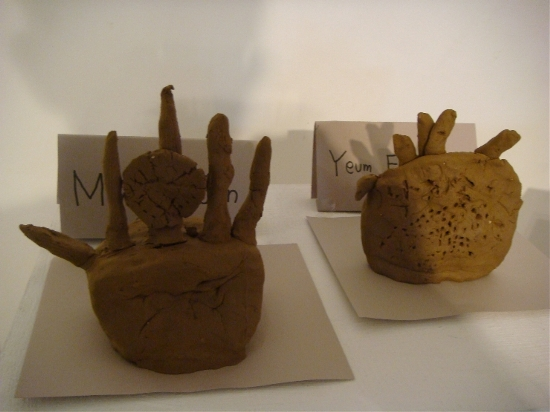 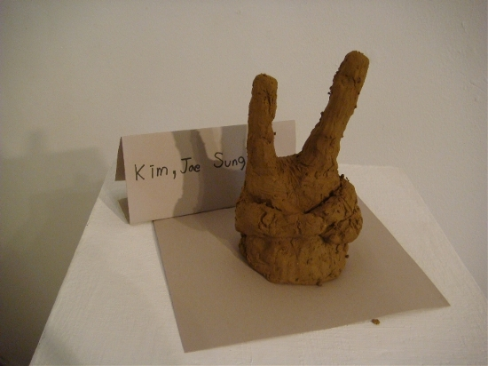 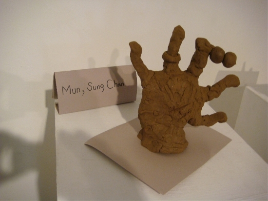 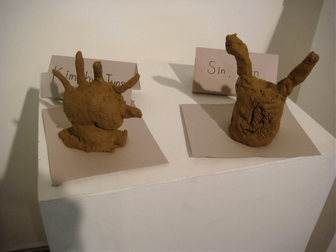
2009-07-08
sap2009.egloos.com 에서 옮김